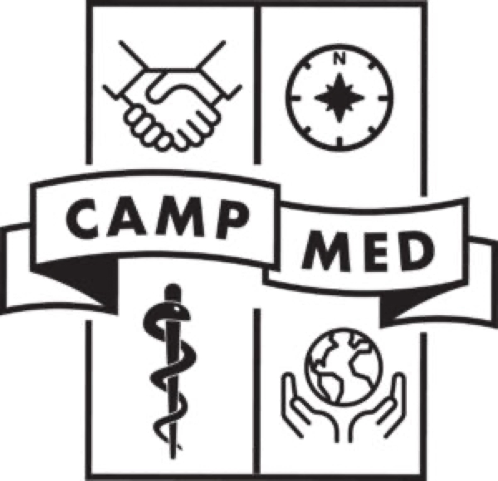
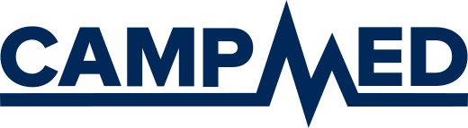
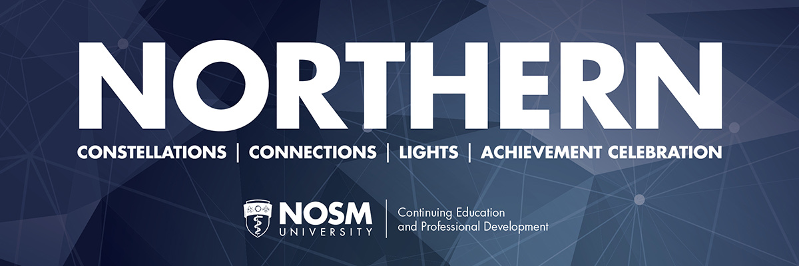
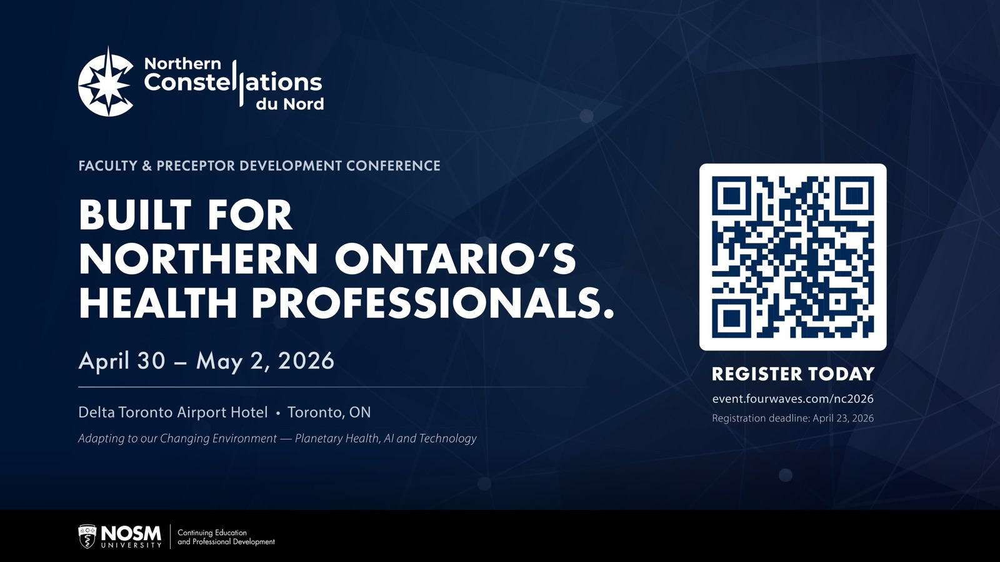
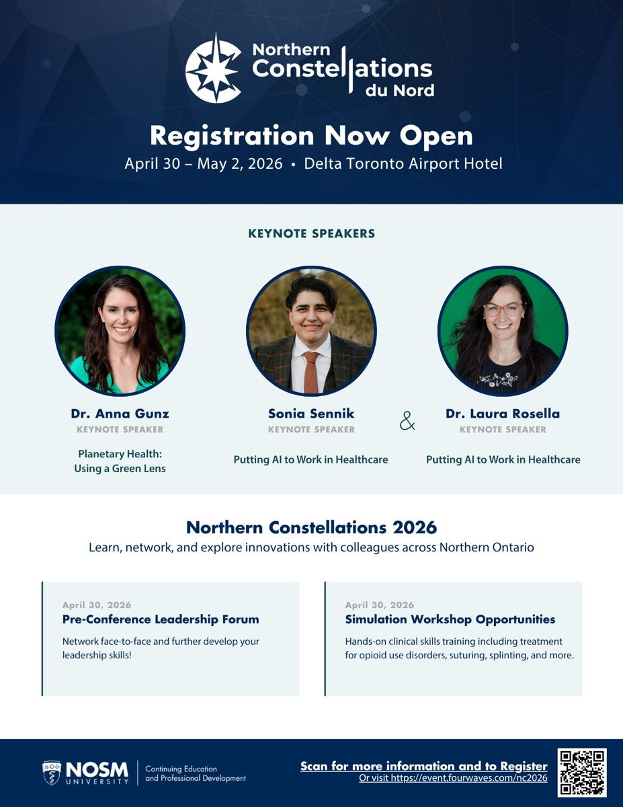

Logo Redesigns
Two logos, one placement. Both adopted university-wide.

November 2024, a two-month co-op placement at NOSM. I redesigned two program logos. The university adopted both, and three months later it hired me.
The M is a heartbeat
The old CampMed logo was type on a shape with no idea in it. The new one hides the idea in plain sight: the M is a pulse line. It's the letterform, the concept, and the underline in one stroke, and it animates.

BEFORE
AFTERA conference gets a compass
CEPD's annual conference had a banner, not a brand. The redesign gave it a compass-star mark and a bilingual lockup. It now fronts hospital lobby screens and registration flyers, and I write the campaign copy that goes with it.

BEFORE
AFTER

TL;DR
- Both logos adopted university-wide and still in use.
- CampMed gained a motion version for digital channels.
- The NC mark now anchors the conference's yearly campaign.
Want a logo with an idea in it? Let's talk.
Get in touch